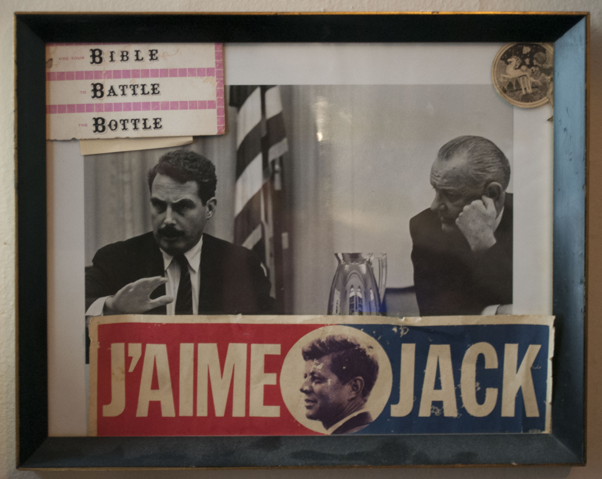
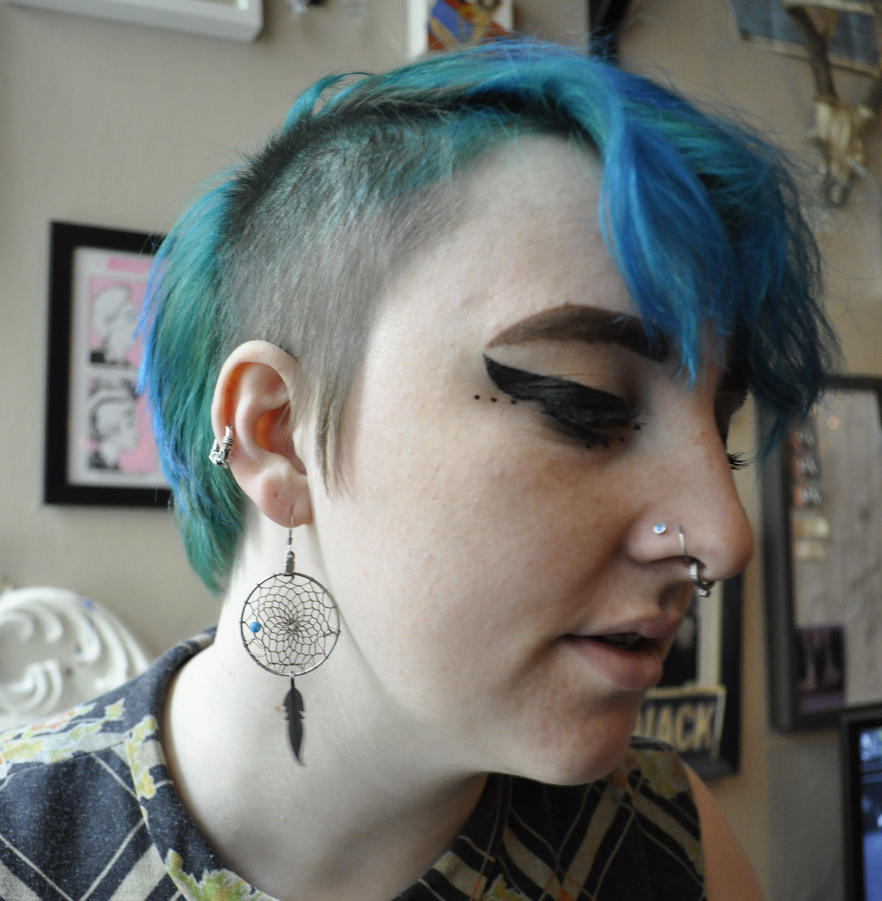
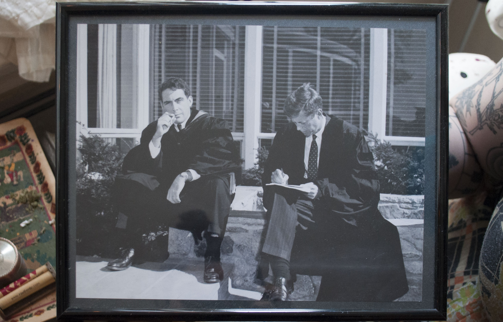
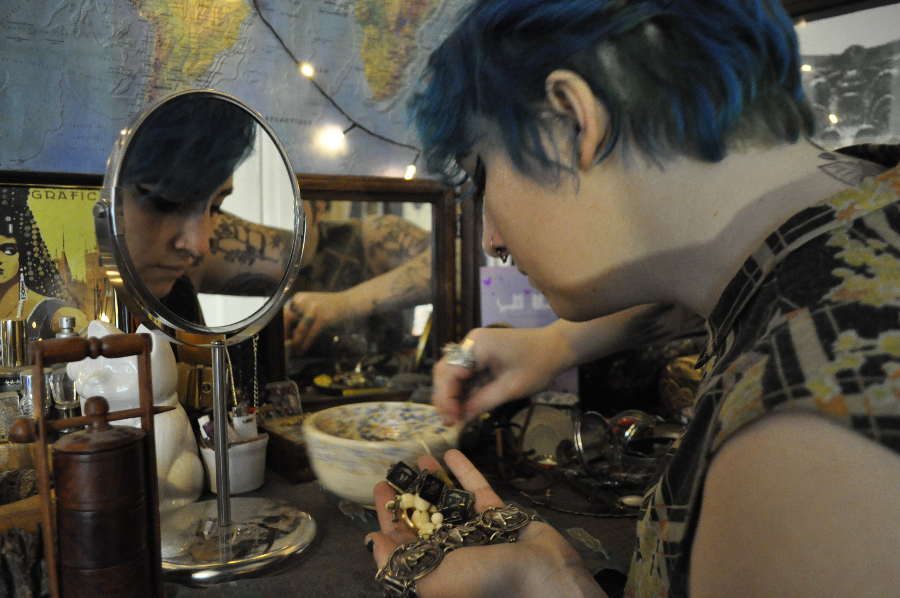
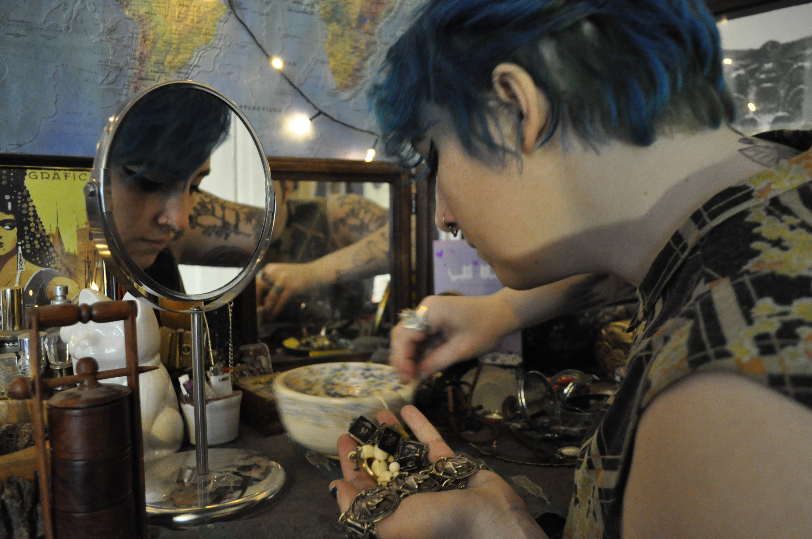

Wearing a royal blue, ankle-length, fur-trimmed coat, Brie Roche-Lilliott had just biked into Bushwick from Crown Heights on a single-speed Origin8.
Roche-Lilliott, a lifelong lover of all things vintage, is in the process of opening an online vintage shop, Siren and Saint, which will offer items from her personal collection, as well as pieces that she acquired to sell.
Her online shop, she says, will preserve the stories that lie behind pre-owned jewelry and clothing.
The world of secondhand clothing has gained attention from millenials looking to get the best value for their dollar, but what’s missing, say collectors, are the stories behind the items themselves. Online secondhand shopping encourages sellers to get rid of things that they don’t want or need, and likewise encourages buyers to shop as if they’re in a department store. What used to be a intimate conversation between buyer and seller, as one dealer states, is now desensitized by the flooded online vintage market.
This is a gap that Brie Roche-Lilliott hopes to fill.
Roche-Lilliott’s online vintage shop, Siren and Saint, will feature not only items being sold, but also stories that Roche-Lilliott associates with them. Each item’s individual description will have a story of a woman she imagines wearing the piece during the time when it was first purchased (i.e. her stylish grandmother, Dot, in a rabbit fur-trimmed bolero-style jacket). She emphasizes the importance of clothing, “pregnant with memory”, finding a place where they are loved and worn.
There are three things that have contributed to Roche-Lilliott’s knack for collecting and selling vintage.
Her first inherited pieces of jewelry came from her grandmother, who would always put off giving gifts from her collection until the end of their stay in Massachusetts.
The reward of inheriting her precious and semi-precious stones–diamonds and pearls, particularly–inspired her to start her own collection. “If you were good,” says Roche-Lilliott, Grandma invites you into her bedroom to look through her vanity boxes. Each box contained one piece of jewelry, and was marked with the date she bought each piece, as well as the price she paid. Roche-Lilliott still has many of the pieces her grandmother gave her.
Secondly, her grandmother’s strict no-touch rule equally encouraged Roche-Lilliott to start her own collection for the sake of owning things that had a useful purpose and could be touched and worn. She now fully believes that clothing and jewelry are meant to be worn in order to be fully cherished, even if it means eventually losing them.
As we spoke over the Nag Champa incense wafting through her apartment, she told me about an earring that she had lost days earlier. It was a gift from her mother, purchased in Mexico for her 25th birthday. After a day of wear, she got ready for bed, only to find the dainty tassel bare of its once brightly colored beads. The significance of her mother buying it for her with her in mind is what left a lasting impression on Roche-Lilliott, though the earring was a definitive part of realizing that connection. When inherited objects of value were lost, the meaning and memories associated with them were retained in Roche-Lilliott’s mind.
Lastly, vintage shopping served as a way for her to feel comfortable in her own body. Roche-Lilliott found an alternative to trying to fit into tiresome, tight-fitting Orange County ensemble of skinny jeans, a plain, solid-color cami, and a cardigan.
Recalling a dress of her grandmother’s that she recently gave to a friend, she says that there’s nothing better than seeing the dress “live on someone.” These pieces are “pregnant with memory,” in Roche-Lilliott’s words.
Her first job selling vintage was during her sophomore year of high school at Scuda, a vintage store in the Old World Village in Orange County, California, that has since closed its doors. Old World Village is a place known for Oktoberfest festivities as well as its German pubs, bakeries, and restaurants. It’s also where she purchased her first vintage piece of clothing. She named it “The Rock Dress” because of the print, which features multicolored rocks (though they, depending on the viewer, can be depicted as raw slabs of meat). By the time the shop closed, Roche-Lilliott was confident that she had an eye for great vintage items.
Her upcoming site will contain “some 40s stuff, though it's a little harder to find in good shape. 50s through 70s primarily. I'm starting with all women's mostly because men don't shop online nearly as much as women do. And I think women also appreciate more of a story to their clothing than men do.” Her collection over the years has focused on dresses. During her freshman year of high school, her uniform consisted mainly of “skinny jeans, a plain solid color cami, like a camisole, and like, a cardigan.” It wasn’t a vintage cardigan, but a plain Gap cardigan. “I didn't know what I was doing.”
Upon finding vintage, she found that her discomfort stemmed from the notion that everyone in Orange County wore jeans, so she also had to. For Roche-Lilliott, vintage provided a platform for her to move away from her awkward Gap uniform, and into an individualistic take on her own personal style.
 

Introduced to the antique business at age 6, Gamon Quinn started her thrifting journey with her family.
Amid visits between Treasures and Junk, an antique mall then owned by her aunt and uncle in Ontario and Angela’s Attic, a secondhand shop owned by her mother and aunt in Pomona, Quinn’s journey through the antiquing world of Southern California was led by her family, whom she describes as a collective of antiquers and resellers.
“We don't take as much pride and patience in creating something,” says Quinn. “That's why I look to the past for things.”
Angela Pena, Quinn’s mother and co-owner of Earlybird Estate Sales, has passed along advice to her daughter about letting go of items in order to continue the “cosmic relationship” one enters when partaking in “gifting, giving, re-giving, getting,” as Quinn calls it. “The reciprocity of it,” she says, is what makes a piece truly special.
Pena started collecting and selling antiques with her aunt Suzy at the Rose Bowl and the Santa Monica Flea Market when she was in college, about 29 years ago. “I will never forget talking to Anthony Kiedis [the singer of the Red Hot Chili Peppers] about a stained glass lamp we had for sale. I almost fainted!” says Pena over email.
Her eye for vintage items has improved, while simultaneously, she noticed stories behind objects getting lost as the online market became more popular. “I can’t tell you how many times my customers ask me where I got the item they are buying,” says Pena. “Sometimes just saying I bought it at an estate sale in Anaheim means something to them.” Not only has Pena observed a significant drop in vintage prices over the last 20 years (due to a flooding of the market that was sparked by the birth of multinational e-commerce corporation eBay), but she’s also witnessed countless stories disappear through the online market. She’s noticed that it’s become increasingly rare to see sellers share any sort of backstory behind pieces being sold. “Either they have no time, they feel it’s irrelevant, or they don’t want anyone to know where they got it,” says Pena.
Quinn received her first hourglass from her great aunt–the same great aunt that her mother co-owned Angela’s Attics with–in memory of the “Wizard of Oz” scene in which the Wicked Witch of the West holds up Dorothy’s remaining lifespan in oxblood sand timer form. She continues to collect hourglasses today.
A different piece that Quinn feels particularly attached to is a wall hanging organizer that has the words, le bon humeur est la charme de la vie (a good mood is the charm of life) engraved on its wooden plaque. “Something my mom has always said to me,” says Quinn, is to “go easy and keep light of life. And I always loved to laugh with her.”
At Pena’s first ‘digger sale’ (the industry term for a messy garage sale), Pena came across a 1920’s Tiffany & Co. bronze and slag glass box, which she purchased at the time for $1. Today the box can be purchased for anywhere from $600 to $2,250.
After 29 years of work in the estate sales industry, Pena acknowledges and values the emotional labor that both employee and clients experience through the process of liquidation, and is committed to sharing the backstory of the items she sells.
Proud to be a part of “treasures past and future”, Pena continues to connect with customers who “are always appreciative, even the people who don’t ask questions. Knowing what I found is not lost and now loved by someone who will continue to treasure it and hopefully pass on its history someday.”
“I would rather be in the moment when acquiring my treasure,” says Pena. “I need to feel a connection, and I think there are still lots of people out there who do too.”
Jane Necol, art history professor at Parsons School of Design describes the typical relationship between estate liquidators and buyer as strictly “commercial and transactional.” based on her experience liquidating her own mother’s home. Instead of intending to replicate the stories of a loved object, most estate salespeople consider only the monetary value of the item. The integral, emotional value is lost.
Regardless of the lack of object history, online vintage shopping has become increasingly popular–and in many occasions, blurs the line between selling and sharing true antique and secondhand clothing. This absence of object history provides a sharp contrast in relation to what customers come into Pippin Vintage looking for–not only a beautiful, state-of-the-art piece of jewelry, but a story to accompany it. “Sometimes we'll kid and say, “Well, we could make a story if you want, or you could make up a story,’” says Rachel Cooper, co-owner of Pippin Vintage.
At one point, after moving Pippin from the Lower East Side to its current location on West 17th Street, Cooper was running a second location near Columbus Circle. “They came and they'd say, ‘do you have any Gucci?’ They were kind of more like label followers, which isn't primarily our customer,” said Cooper. Their Chelsea location has been more reliable, with a customer base that “doesn’t care what fashion it’s in, they just love it.” (She’s referring to the pieces that they stock).
Sheri Weiss, collector and seller of vintage jewelry at Showplace Antique & Design Center, has likewise acknowledged this longing to know an object’s history. She also tells clients that she can make up a story, but above all, she focuses on selling the details of manufacture date, quantity, designer, and quality.
“That connection,” says Roche-Lilliott, “it doesn't die with the object, right? It lives on. It transfers.”